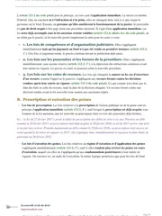

L'arrêt Papon du 23 janvier 1997, l'élément moral de la complicité expliqué
Maurice Papon, ancien haut fonctionnaire de Vichy, conteste avoir voulu l'extermination des personnes qu'il a fait arrêter et déporter. Le 23 janvier 1997, la chambre criminelle de la Cour de cassation juge que le complice peut être poursuivi même sans partager cette intention, dès lors qu'il sait qu'il aide une entreprise criminelle. La règle sert encore en 2021, dans l'affaire du cimentier Lafarge en Syrie.

La règle que pose cet arrêt
Le 23 janvier 1997, la chambre criminelle de la Cour de cassation, qui juge les pourvois en matière pénale, rejette le pourvoi de Maurice Papon (pourvoi n° 96-84.822). Papon contestait l'arrêt qui le renvoyait devant la cour d'assises pour complicité de crimes contre l'humanité.
Un pourvoi sert seulement à vérifier si le droit a été correctement appliqué, et les faits restent ceux retenus par les juges précédents. Sous l'Occupation, Papon était secrétaire général de la préfecture de la Gironde. Il avait prêté son concours à l'arrestation de personnes juives promises à l'extermination, puis à leur séquestration et à leur déportation.
Devant les juges, il soutenait n'avoir fait qu'exécuter des tâches administratives, sans jamais partager l'intention d'extermination des organisateurs de cette politique.
La Cour de cassation répond que l'élément moral de la complicité, c'est-à-dire ce que le complice doit savoir ou vouloir, est établi dès qu'il a conscience d'apporter son concours à une entreprise qu'il sait criminelle.
Le complice peut donc être condamné même s'il ne partage pas le dol spécial de l'auteur principal, c'est-à-dire son intention de participer à un plan concerté de persécution ou d'extermination, et même s'il n'adhère pas à son idéologie. On appelle cette solution l'arrêt Papon, et elle reste aujourd'hui la référence sur ce point précis du droit pénal général.
Deux décisions distinctes portent le nom de Papon dans les esprits. L'arrêt du 23 janvier 1997 rejette seulement le pourvoi contre l'arrêt de renvoi devant la cour d'assises, et c'est lui qui pose la règle sur l'élément moral de la complicité. La condamnation de Papon à dix ans de réclusion criminelle, c'est-à-dire la peine de prison prévue pour les crimes, est prononcée un an plus tard par une autre juridiction, la cour d'assises de la Gironde, le 2 avril 1998.
Secrétaire général de la préfecture de la Gironde, Maurice Papon prête son concours à quatre convois qui déportent des personnes juives vers les camps.
La chambre d'accusation, l'organe qui décidait alors si un dossier était assez solide pour aller au procès, renvoie Papon devant la cour d'assises pour complicité de crimes contre l'humanité.
La Cour de cassation rejette le pourvoi de Papon et pose la règle sur l'élément moral de la complicité.
La cour d'assises de la Gironde condamne Papon à dix ans de réclusion criminelle, une décision distincte de l'arrêt étudié ici.

Fiche complète
Droit pénal général L1 S2
Les faits, le rôle de Papon sous l'Occupation
De juin 1942 à août 1944, Maurice Papon occupe les fonctions de secrétaire général de la préfecture de la Gironde, sous l'autorité du préfet régional. À ce poste administratif, il a notamment la charge du service qui s'occupe des questions concernant les personnes juives du département.
L'accusation lui reproche d'avoir aidé activement, en connaissance de cause, à arrêter puis à enfermer des personnes choisies parce qu'elles étaient juives. Il aurait aussi aidé à leur départ en déportation, à bord de plusieurs convois partis de Bordeaux vers les camps d'extermination en 1942 et en 1944.
Devant la justice, Papon conteste avoir partagé l'intention de destruction systématique qui animait les organisateurs de cette politique. Il affirme n'avoir fait qu'exécuter des tâches purement administratives, sans connaître ni vouloir leur finalité exacte.
La procédure et le pourvoi
L'affaire passe d'abord par une instruction de plusieurs années. C'est la phase de l'enquête où un juge rassemble les preuves avant de décider s'il y a lieu de juger l'affaire. Papon est mis en examen, c'est-à-dire officiellement soupçonné dans le dossier, puis renvoyé devant la juridiction de jugement.
La chambre d'accusation de la cour d'appel de Bordeaux, l'organe qui décidait à l'époque si un dossier était assez solide pour aller au procès, confirme son renvoi devant la cour d'assises dans un arrêt du 18 septembre 1996. Papon forme alors un pourvoi en cassation contre cet arrêt de renvoi.
Dans son moyen, c'est-à-dire l'argument qu'il développe devant la Cour de cassation, il soutient que la complicité de crime contre l'humanité suppose que le complice ait personnellement adhéré à la politique d'extermination. Selon lui, le complice doit aussi avoir partagé le dol spécial des auteurs principaux, c'est-à-dire leur intention particulière de persécuter ou d'exterminer.
À l'inverse, le ministère public, c'est-à-dire les magistrats chargés de représenter la société et de soutenir l'accusation, soutient que la seule conscience d'apporter son aide à une entreprise que l'on sait criminelle suffit à caractériser cette complicité.
Le problème de droit
L'élément moral de la complicité de crime contre l'humanité exige-t-il que le complice ait personnellement adhéré à la politique d'extermination et partagé le dol spécial de l'auteur principal, ou la seule conscience d'apporter sciemment son aide à cette entreprise suffit-elle ?
La solution de la Cour de cassation
La chambre criminelle rejette le pourvoi de Papon. Elle juge que la complicité peut être caractérisée même si le complice n'a pas adhéré à l'idéologie ou à l'organisation des auteurs principaux.
L'attendu de principe
« L'article 6, dernier alinéa, du statut du tribunal militaire international n'exige pas que le complice de crimes contre l'humanité ait adhéré à la politique d'hégémonie idéologique des auteurs principaux ni qu'il ait appartenu à une des organisations déclarées criminelles par le tribunal de Nuremberg. »Cass. crim., 23 janvier 1997, n° 96-84.822 (affaire Papon)
La Cour ajoute que la chambre d'accusation, par les motifs qu'elle a retenus, a bien caractérisé des actes de complicité au sens de l'article 60 de l'ancien Code pénal et de l'article 121-7 du nouveau Code pénal. Son raisonnement est donc complet et cohérent.
La Cour vise les deux textes parce que les faits ont été commis en 1942 et en 1944, sous l'ancien code, alors qu'ils sont jugés en 1997, quand le nouveau code est en vigueur depuis 1994.
Enfin, la Cour écarte l'argument tiré de la durée de la procédure, car cette durée ne remet pas en cause la validité du renvoi.
Le sens du raisonnement
Pour comprendre cette solution, il faut distinguer deux niveaux d'intention qu'on confond facilement. L'auteur principal d'un crime contre l'humanité doit, lui, avoir le dol spécial de participer à un plan concerté de persécution ou d'extermination. Ce dol spécial donne au crime sa gravité particulière, et il le distingue d'un simple meurtre ou d'une simple séquestration.
Le complice, en revanche, peut être puni sans partager ce projet global. La Cour applique ici un principe classique du droit de la complicité, qu'on appelle la théorie de l'emprunt de criminalité.
D'après cette théorie, le complice emprunte la qualification pénale du fait principal auquel il apporte son aide. Il répond donc du même crime que l'auteur, même s'il n'en partage ni le mobile ni l'intention profonde.
Il suffit ainsi qu'au moment où il agit, il sache que son aide sert une entreprise criminelle. Il n'a pas besoin, en plus, de connaître dans le détail le sort final réservé aux victimes.
Cette nuance a d'ailleurs compté dans le procès de Papon lui-même. En 1998, la cour d'assises de la Gironde a jugé qu'il n'était pas prouvé que Papon connaissait précisément le programme d'extermination. Elle l'a donc acquitté, c'est-à-dire déclaré non coupable, de la complicité d'assassinat.
En revanche, elle l'a condamné pour complicité d'arrestation et de séquestration arbitraires, car il savait qu'il aidait à commettre ces faits.
Ce verdict applique la règle de l'arrêt de 1997. La complicité repose sur la connaissance du caractère criminel de l'acte auquel on participe, que l'on adhère ou non à l'idéologie du projet global.
Cette solution évite un résultat absurde. Si la complicité de crime contre l'humanité exigeait de prouver l'adhésion idéologique du complice, il deviendrait presque impossible de poursuivre les fonctionnaires qui appliquent une politique criminelle sans y croire, mais en sachant ce qu'elle produit.
La Cour de cassation retient donc une conception large de la complicité, fondée sur ce que le complice sait de l'entreprise criminelle, quelles que soient ses convictions.
Tu révises ton droit pénal général ?
Le guide « Réviser le droit sans s'épuiser » est offert. Il part de ton environnement de travail et va jusqu'à la copie du jour de l'examen, avec la méthode que mes élèves appliquent pour retenir les grands arrêts dans la durée.
L'arrêt Papon est-il toujours d'actualité ?
Oui, sa définition de l'élément moral de la complicité de crimes contre l'humanité reste la référence en droit français, près de trente ans après avoir été posée. L'affaire Papon s'est pourtant poursuivie après cet arrêt de 1997.
Le procès s'ouvre devant la cour d'assises de la Gironde en octobre 1997, et Papon est condamné le 2 avril 1998 à dix ans de réclusion criminelle. Il forme alors un pourvoi contre cette condamnation, puis il s'enfuit en Suisse au lieu de se constituer prisonnier, comme la loi l'exigeait alors pour que son pourvoi soit examiné.
Par un arrêt du 21 octobre 1999, la chambre criminelle le déclare donc déchu de ce second pourvoi, c'est-à-dire qu'elle refuse de l'examiner, parce qu'il ne s'est pas mis en état. La qualification de complicité n'est ainsi jamais réexaminée au fond.
Papon saisit ensuite la Cour européenne des droits de l'homme. En 2002, celle-ci constate une violation de son droit d'accès au juge de cassation, parce qu'elle juge excessive cette déchéance automatique de son pourvoi.
Cette décision européenne laisse intacte la qualification de complicité de crimes contre l'humanité, jugée définitivement dès 1997.
La règle posée en 1997 s'applique aussi bien au-delà de cette affaire. Par un arrêt du 7 septembre 2021 (pourvoi n° 19-87.367), la chambre criminelle valide la mise en examen de la société Lafarge pour complicité de crimes contre l'humanité. Les juges d'instruction lui reprochent d'avoir maintenu son activité industrielle en Syrie pendant la guerre civile, au contact de groupes armés, dont l'État islamique.
Cette décision reprend explicitement le principe posé vingt-quatre ans plus tôt par l'arrêt Papon sur l'élément moral de la complicité. La règle s'applique donc aussi à des affaires récentes, loin des grands procès historiques.
Aujourd'hui encore, elle sert à juger toute personne, physique ou morale, qui apporte sciemment son aide à des crimes qu'elle n'a pas elle-même décidés. Une personne morale est par exemple une société comme Lafarge.
Ma fiche de droit pénal général L2 reprend tout le programme de la matière, depuis l'infraction et ses éléments jusqu'aux causes d'irresponsabilité, en passant par la responsabilité pénale et la tentative. Tu y trouves tous les grands arrêts à connaître.
Le Statut du Tribunal militaire international, que vise l'arrêt Papon, est aussi au cœur du jugement de Nuremberg de 1946. Ce jugement porte sur une autre question, celle de l'ordre reçu par l'auteur lui-même, et je l'explique dans ma fiche sur le jugement de Nuremberg de 1946 sur l'ordre du supérieur.
La critique doctrinale de cette solution
Cet arrêt a été commenté dès sa publication par Jean-Pierre Delmas Saint-Hilaire, dans une chronique au Recueil Dalloz de 1997 consacrée précisément à la définition juridique de la complicité de crime contre l'humanité dégagée par cette décision.
Plus récemment, Damien Roets, professeur à l'université de Limoges, a repris cet arrêt comme le point de départ de la position française sur la complicité de génocide et de crimes contre l'humanité, en la rapprochant de la jurisprudence des tribunaux pénaux internationaux sur la même question.
Les auteurs reconnaissent que cette solution respecte les principes généraux de la complicité en droit français. En effet, ces principes exigent seulement du complice un dol général, c'est-à-dire la simple connaissance du caractère criminel de l'acte principal. Le dol spécial, c'est-à-dire l'intention particulière parfois exigée pour certains crimes, ne concerne que l'auteur lui-même.
Cette solution présente pourtant un risque. Comme elle exige moins sur l'intention du complice, elle permet de poursuivre davantage de personnes pour un crime aussi grave qu'un crime contre l'humanité, y compris des agents qui n'ont rien décidé ni organisé eux-mêmes.
Ce mécanisme permet ainsi, vingt-quatre ans plus tard, d'envisager la responsabilité d'une entreprise comme Lafarge, du seul fait qu'elle connaissait le caractère criminel du contexte dans lequel elle continuait de travailler.
Comment utiliser cet arrêt dans une copie
Dans un cas pratique. Tu cites cet arrêt dès qu'un énoncé de responsabilité pénale met en scène une personne qui a aidé ou facilité une infraction sans en être elle-même l'auteur, et qui affirme qu'elle n'adhérait pas personnellement au projet criminel.
Tu rappelles d'abord les deux conditions de la complicité prévues par l'article 121-7 du Code pénal, à savoir un fait principal punissable et un acte de complicité. Tu discutes ensuite l'élément moral grâce à cette solution. Il suffit que la personne ait su qu'elle aidait une infraction, même si elle n'adhérait pas au projet.
Dans une dissertation sur la responsabilité pénale. Cet arrêt te permet d'illustrer la différence entre le dol général exigé du complice et le dol spécial parfois exigé de l'auteur principal, pour les infractions qui, comme le crime contre l'humanité, en comportent un.
Toute la méthode se trouve sur ma page consacrée à la dissertation juridique, et sur celle consacrée à la fiche d'arrêt, que tu prépares avant de rédiger.
Les erreurs à éviter avec cet arrêt
- Distinguer l'arrêt du 23 janvier 1997 de la condamnation de Papon. L'arrêt étudié ici rejette seulement le pourvoi contre le renvoi devant la cour d'assises. La condamnation à dix ans de réclusion criminelle est une décision distincte, rendue par la cour d'assises de la Gironde le 2 avril 1998.
- Se contenter de la conscience d'aider une entreprise criminelle. La Cour de cassation exige seulement que le complice ait eu conscience d'apporter son concours à une entreprise qu'il savait criminelle. L'accusation n'a donc pas à prouver qu'il partageait l'intention idéologique des auteurs.
- Limiter l'arrêt de 1999 à la déchéance du pourvoi. Papon a été déclaré déchu de son second pourvoi, formé contre sa condamnation, parce qu'il s'était enfui en Suisse au lieu de se constituer prisonnier. La Cour de cassation ne s'est donc jamais reprononcée sur la qualification de complicité après l'arrêt de 1997.
- Montrer que la règle s'applique encore. Sa règle sur l'élément moral de la complicité continue de s'appliquer aujourd'hui, comme le montre son emploi dans l'affaire Lafarge en 2021.
- Préciser pour quels faits Papon a été condamné. En 1998, la cour d'assises de la Gironde l'a acquitté de la complicité d'assassinat, faute de preuve suffisante de sa connaissance précise du programme d'extermination. Elle l'a condamné seulement pour complicité d'arrestation et de séquestration arbitraires.
Questions fréquentes
Que dit l'arrêt Papon en une phrase ?
Quelle est la date et le numéro de pourvoi de l'arrêt Papon ?
L'arrêt Papon de 1997 est-il le même que la condamnation de Maurice Papon ?
Comment citer l'arrêt Papon en copie ?
L'arrêt Papon est-il toujours d'actualité ?

Tout le programme de droit pénal général tient dans une seule fiche.
Ma fiche de droit pénal général L2 reprend les notions une par une, avec leurs grands arrêts. Tout y est expliqué avec des mots courants, et tu peux t'en servir tel quel en cas pratique comme en dissertation.
Voir la fiche de droit pénal général L2